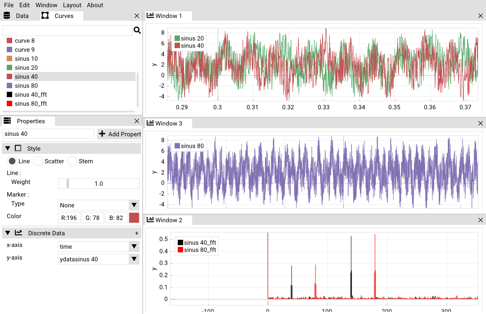
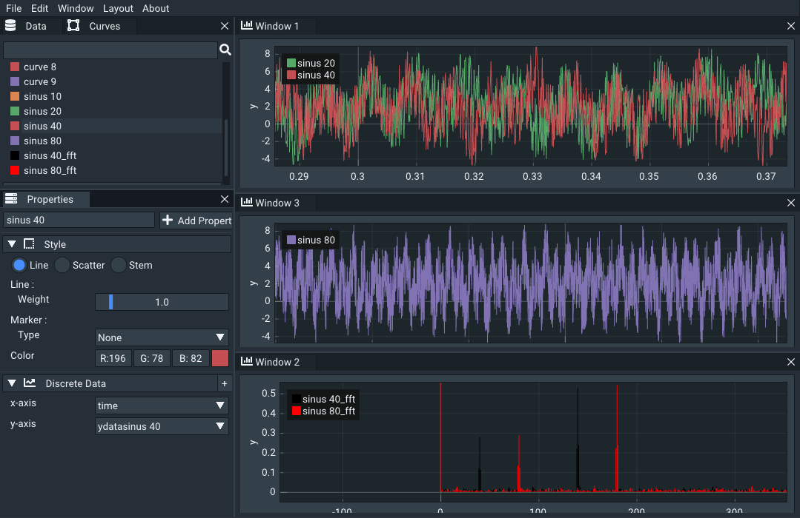
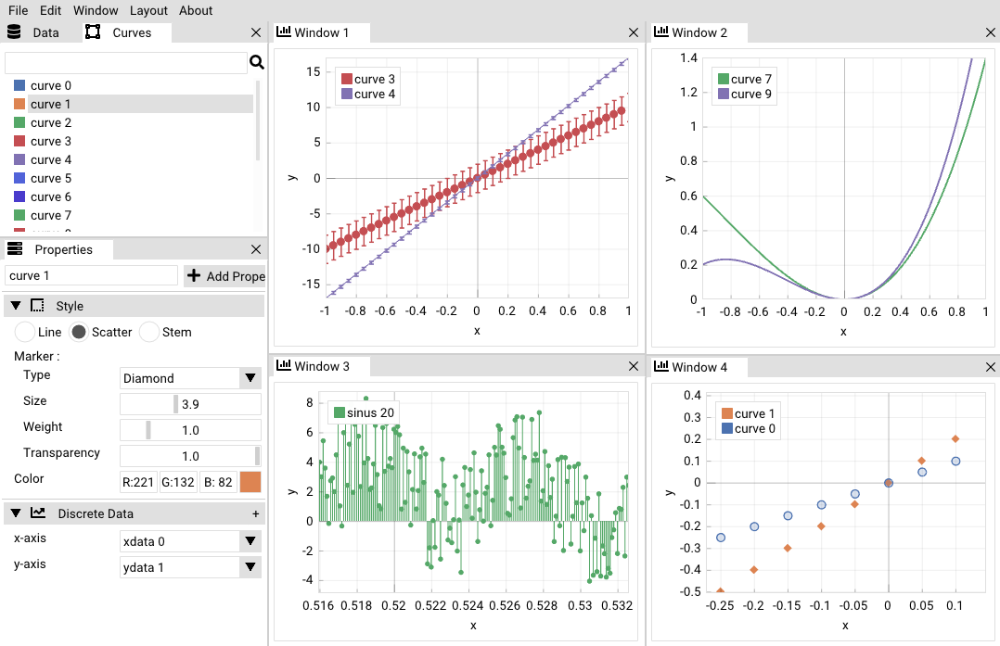
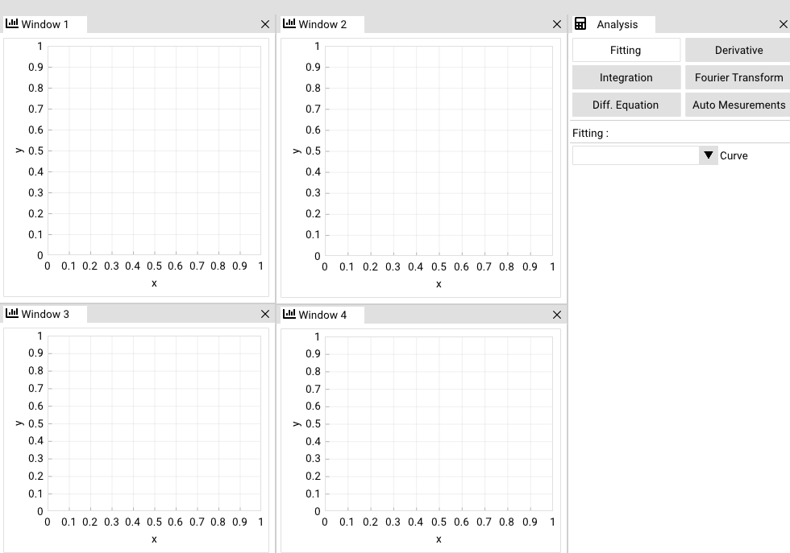
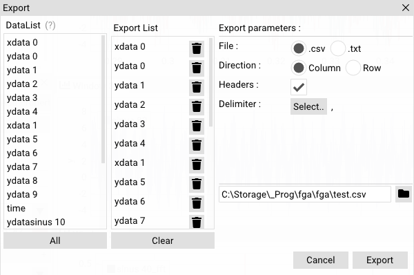
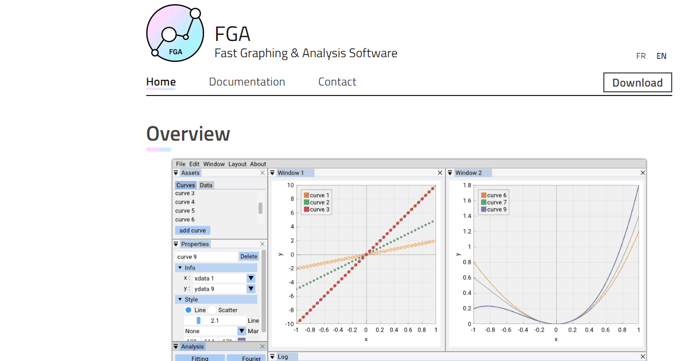

FGA - Fast Graphing & Analysis Software
Project #1Durée
Ce projet est actuellement en développement.
Mon Role
Je développe ce projet seul (pour le moment) durant mon temps libre.
Ce projet est actuellement en développement.
Je développe ce projet seul (pour le moment) durant mon temps libre.
La plupart des logiciels utilisés aujourd'hui dans les universités sont datés et non mis à jours. L'idée de ce projet est donc de fournir une alternative aux logiciels d'analyse de données que j'ai pu utiliser dans mon cursus. Ce logiciel veut permettre une analyse et visualisation de données rapide et efficace avec une plus grande marge de maneuvre sur des opérations scientifiques précises qui ne sont pas possible sur les logiciels grand public (ex : Excel).



Chaque courbe possède un style propre. Il peut être modifié pour obtenir la courbe voulue. Il y a aussi possibilité d'ajouter des barres d'erreurs en chaque point de la courbe.
Différents modules permettent l'analyse des courbes. Il y a par exemple le module d'ajustement (fitting) qui permet d'ajuster une courbe selon un modèle donné. Il y a aussi le module de transformée de fourier qui donne le spectre en fréquence d'une courbe. On peut voir d'autres modules comme le calcul de dérivée, l'intégrale ou encore résoudre des équations différentielles mais certains ne sont pas encore implémentés à ce stade.

Les données peuvent être générée par le logiciel mais il est aussi possible d'importer des données extérieures stockées dans des fichiers csv ou texte. Le module d'importation / exportation est flexible et permet de choisir certains paramètres (le délimiteur, la direction, les labels...)


Le site n'est pour le moment pas en ligne mais la maquette est déjà créée et fonctionnelle. Le site pourra être mis en ligne dès que le logiciel sera terminé.